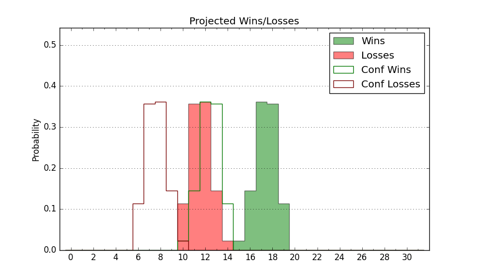

| Home | Game Probabilities | Conferences | Preseason Predictions | Odds Charts | NCAA Tournament |
| City: | Poughkeepsie, New York | |
| Conference: | Metro Atlantic (4th)
| |
| Record: | 10-6 (Conf) 15-10 (Overall) | |
| Ratings: | Comp.: -2.3 (185th) Net: -2.2 (185th) Off: 97.8 (299th) Def: 100.0 (89th) SoR: 0.0 (138th) |
| Remaining | ||||||
|---|---|---|---|---|---|---|
| Date | Opponent | Win Prob | Pred. | |||
| 3/1 | Fairfield (175) | 62.5% | W 69-66 | |||
| 3/3 | Iona (194) | 66.3% | W 67-63 | |||
| 3/7 | @ Quinnipiac (202) | 37.9% | L 67-70 | |||
| 3/9 | Niagara (234) | 72.4% | W 69-63 | |||
| Previous | Game Score | |||||
| Date | Opponent | Win Prob | Result | Off | Def | Net |
| 11/6 | @Army (330) | 70.2% | W 71-55 | 11.5 | 4.9 | 16.4 |
| 11/11 | @UMBC (283) | 55.2% | W 65-59 | -13.8 | 19.0 | 5.2 |
| 11/18 | @Binghamton (284) | 55.3% | L 59-82 | -13.0 | -23.6 | -36.6 |
| 11/21 | @New Hampshire (229) | 43.0% | L 71-74 | 9.4 | -13.4 | -4.0 |
| 11/25 | Bucknell (287) | 81.2% | W 73-49 | 15.5 | 14.6 | 30.2 |
| 11/29 | @Iona (194) | 36.7% | W 68-64 | 2.0 | 10.0 | 12.0 |
| 12/3 | Manhattan (338) | 90.7% | W 70-56 | 1.3 | 4.6 | 5.8 |
| 12/9 | @Dartmouth (333) | 70.9% | W 63-53 | -0.8 | 4.6 | 3.8 |
| 12/18 | Md Eastern Shore (349) | 93.1% | W 76-52 | 9.4 | 3.3 | 12.7 |
| 12/22 | @Notre Dame (127) | 21.4% | L 56-60 | 10.9 | -2.7 | 8.2 |
| 12/30 | Lehigh (265) | 76.0% | L 58-65 | -23.3 | 1.4 | -21.9 |
| 1/7 | @Fairfield (175) | 32.8% | L 61-82 | -9.5 | -13.5 | -23.0 |
| 1/12 | Quinnipiac (202) | 67.5% | L 55-66 | -20.6 | -2.4 | -22.9 |
| 1/14 | Rider (263) | 75.8% | W 83-60 | 28.6 | -2.0 | 26.6 |
| 1/19 | @Mount St. Mary's (235) | 43.5% | L 48-65 | -23.9 | -2.7 | -26.6 |
| 1/21 | Siena (358) | 94.8% | W 50-48 | -30.8 | -0.8 | -31.6 |
| 1/26 | @Niagara (234) | 43.5% | L 62-67 | -6.7 | -1.8 | -8.5 |
| 1/28 | @Canisius (252) | 46.5% | W 80-71 | 21.8 | -8.4 | 13.4 |
| 2/2 | Mount St. Mary's (235) | 72.4% | L 58-76 | -16.9 | -19.3 | -36.1 |
| 2/4 | Saint Peter's (195) | 66.5% | W 63-52 | 10.1 | 4.7 | 14.8 |
| 2/8 | @Siena (358) | 84.3% | W 67-51 | 7.7 | 6.7 | 14.3 |
| 2/10 | @Rider (263) | 47.9% | W 77-62 | 19.6 | 7.7 | 27.3 |
| 2/16 | Canisius (252) | 74.7% | W 78-55 | 21.1 | 4.9 | 26.0 |
| 2/23 | @Manhattan (338) | 74.1% | W 57-50 | -9.0 | 7.2 | -1.9 |
| 2/25 | @Saint Peter's (195) | 36.8% | L 60-69 | 6.2 | -6.8 | -0.6 |
| Stats & Trends | |||||
|---|---|---|---|---|---|
| Current | Day | Week | Month | Season | |
| Composite | -2.3 | +0.0 | -0.0 | +3.9 | +7.4 |
| Comp Rank | 185 | +1 | +1 | +51 | +79 |
| Net Efficiency | -2.2 | +0.0 | -0.1 | +3.7 | -- |
| Net Rank | 185 | -- | +1 | +47 | -- |
| Off Efficiency | 97.8 | +0.0 | -0.1 | +3.7 | -- |
| Off Rank | 299 | +1 | -4 | +30 | -- |
| Def Efficiency | 100.0 | -0.0 | +0.0 | +0.0 | -- |
| Def Rank | 89 | -- | +2 | +13 | -- |
| SoS Rank | 352 | -- | +3 | +9 | -- |
| Exp. Wins | 17.4 | +0.0 | -0.1 | +2.1 | +3.7 |
| Exp. Conf Wins | 12.4 | +0.0 | -0.1 | +2.1 | +2.9 |
| Conf Champ Prob | 19.0 | +0.4 | +3.6 | +17.0 | +12.4 |

| Advanced Stats | ||
|---|---|---|
| Stat | Value | Rank |
| Off Eff FG % | 0.492 | 224 |
| Off Ast Ratio | 0.140 | 179 |
| Off ORB% | 0.216 | 333 |
| Off TO Rate | 0.167 | 311 |
| Off FT Ratio | 0.279 | 310 |
| Def Eff FG % | 0.501 | 152 |
| Def Ast Ratio | 0.119 | 33 |
| Def ORB% | 0.273 | 155 |
| Def TO Rate | 0.169 | 50 |
| Def FT Ratio | 0.418 | 331 |